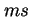

Next: กฎการไหลต่อเนื่องของงาน (Forced Flow Law)
Up: กฎภาระงาน (Utilization Law)
Previous: กฎภาระงาน (Utilization Law)
Contents
Index
พิจารณาคอมพิวเตอร์ Gateway ถ้าแพ็คเกตเข้ามาในระบบที่อัตรา 125 เพคเกตต่อวินาที และคอมพิวเตอร์ Gateway ใช้เวลาโดยเฉลี่ย 2  ในการจัดการส่งผ่านแพ็คเกต
ซึ่งค่าการคำนวณได้เท่ากับ การคำนวณโดยใช้ทฤษฎีคิว  แต่ในการพิจารณาคิว ต้องมีสมมุติฐานว่าระบบเป็น IID และมีการเข้าใช้ระบบ และเวลาการบริการมีการกระจายแบบ Exponential
แต่ในการพิจารณาคิว ต้องมีสมมุติฐานว่าระบบเป็น IID และมีการเข้าใช้ระบบ และเวลาการบริการมีการกระจายแบบ Exponential
Vara Varavithya
2002-03-09